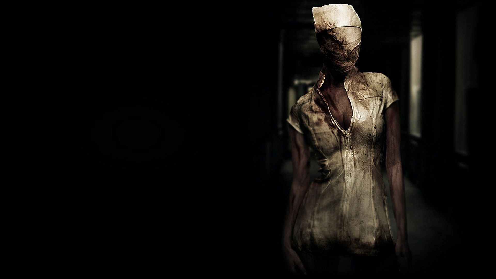
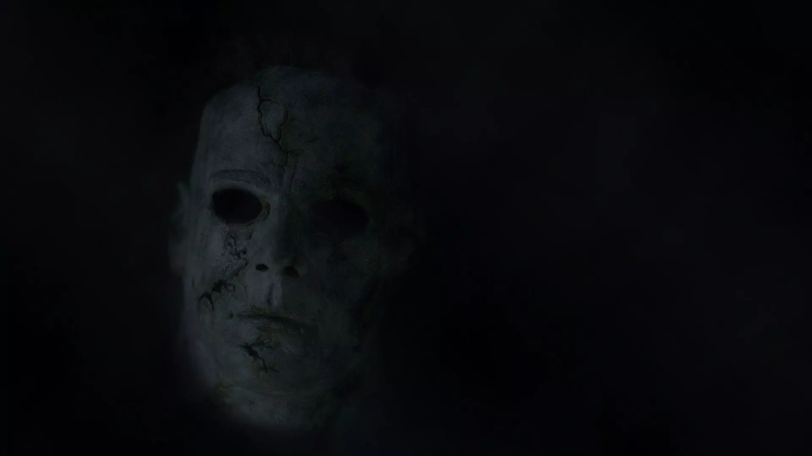
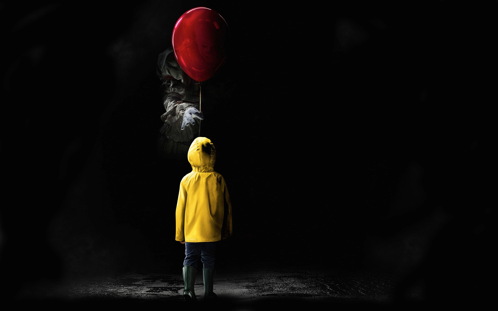

Жила-была девочка. Жила она с папой и маленьким братиком. У нее не было мамы, потому что мама умерла. Девочка очень скучала без мамы. Когда папа уходил на работу, он предупреждал девочку: - Никому дверь не открывай, особенно человеку с черным лицом. И вот однажды, когда папа был на работе, раздался стук в дверь. Девочка не послушала папу и открыла дверь. На пороге стоял человек с синим лицом. И он сказал: - Девочка, я могу вернуть твою маму, но за это ты мне должна отдать братика. Девочка отказалась и закрыла дверь. На следующий день к девочке пришел человек с красным лицом: - Девочка, я могу вернуть твою маму, но за это я заберу твоего папу. Девочка отказалась и закрыла дверь. Когда папа вернулся с работы, девочка рассказала ему о том, что приходил человек с синим лицом, а потом человек с красным лицом. Папа сильно рассердился и сказал, чтобы девочка больше никогда никому не открывала дверь. Но на следующий день, когда папа ушел, снова раздался стук в дверь. Девочка посмотрела в глазок на двери и увидела человека с черным лицом. - Девочка, - из-за двери сказал человек с черным лицом, - я могу вернуть твою маму, но не буду забирать ни твоего братика, ни папу. Девочка обрадовалась и открыла дверь. Человек с черным лицом вошел и сказал: - Но я заберу тебя. Когда папа вернулся домой, он увидел открытую дверь и большое черное пятно на полу. А девочки и братика не было. Человек с черным лицом обманул девочку и забрал вместе с ней и ее братика. Папа девочки достал керосин, вылил на черное пятно и поджег. Пятно сразу же вспыхнуло черным пламенем и послышались крики. Когда сгорел весь дом, папа девочки купил билет на поезд и навсегда уехал в другой город.
Одна девочка гуляла на улице с любимой куклой. Тут к ней подошла старушка в черном платье. Лицо старушки было укрыто черным платком. Старушка посмотрела на девочку и сказала: - Девочка, дай мне свою куклу. А я тебе дам за нее черное зеркальце. И старушка вытащила красивое черное зеркальце. Девочке так понравилось зеркальце, что она сразу же отдала куклу старушке. Старушка взяла куклу и протянула девочке черное зеркальце. Но тут кукла девочки вдруг ожила и сдернула со старушки черный платок. И девочка увидела, что под платком у старушки нет лица. - Беги, девочка! – крикнула кукла. Девочка повернулась и побежала. Но старушка направила на нее черное зеркальце и девочку стало в него затягивать. Тогда кукла ударила старушку по руке, зеркальце выпало из рук старушки, упало на землю и разбилось. Как только черное зеркальце разбилось, старушка в черном закричала и вспыхнула как спичка. А с ней загорелась и кукла девочки. Но кукла еще успела сказать девочке: - Закопай разбитое зеркальце, но ни за что не смотри в него. Девочка так и сделала. Но когда закапывала разбитое черное зеркальце, она мельком взглянула в маленький осколок. И от того, что там увидела девочка, ее волосы стали седыми, как у стариков.
Одна девочка пошла в магазин и увидела, что там продается красивая музыкальная шкатулка. Девочке так понравилась шкатулка, что она тут же захотела ее купить. Но у нее было мало денег. - Сколько стоит эта музыкальная шкатулка? – спросила девочка у продавщицы. - А сколько у тебя есть? – сказала продавщица. Девочка вытащила все деньги, которые у нее были. Продавщица быстро пересчитала деньги. Там было ровно тридцать пять копеек. - Эта музыкальная шкатулка стоит как раз тридцать пять копеек, - сказала продавщица и отдала девочке шкатулку. Девочка пришла домой. Она хотела дождаться мамы, но не удержалась и запустила музыкальную шкатулку. Вместе с музыкой из шкатулки выбралась смерть и забрала душу девочки. Но тут прибежала мама девочки. Она еще на улице услышала музыку и поэтому закрыла уши платком, чтобы смерть не смогла забрать ее душу, ведь смерть из музыкальной шкатулки забирала только тех, кто слышал музыку. Увидев, что случилось, мама быстро запустила шкатулку в обратную сторону и душа девочки вернулась назад. Правда, после этого девочка совсем перестала слышать. А музыкальную шкатулку мама сожгла в печке.
Один мальчик нашел старую железную банку. Внутри этой банки что-то тихо пересыпалось. Мальчик хотел открыть банку, чтобы посмотреть, что внутри, но никак не мог – железо проржавело. Тогда мальчик взял большой камень и стал стучать по железной банке. Но тут вдруг услышал: - Не открывай. Мальчик обернулся, но никого не было. - Не открывай, - снова послышался голос. Тут мальчик увидел на ветке дерева большую птицу. Птица опять повторила: - Не открывай. Но мальчик вновь стал сбивать ржавчину с железной банки. Через какое-то время он попробовал открыть банку. Банка не открывалась. А птица все сидела на дереве и повторяла: - Не открывай, не открывай! Мальчик разозлился на птицу и бросил в нее железной банкой. Ударившись о ветку, банка раскрылась и какая-то тень выскользнула из банки, схватила птицу и проглотила ее. Это была Тень-смерть. Мальчик испугался и убежал. Но Тень-смерть не стала преследовать мальчика. Увидев, что Тень-смерть не гонится за ним, мальчик обрадовался и пошел играть дальше. Но когда он вернулся домой, в доме никого не было – Тень-смерть всех убила и проглотила. Мальчик заплакал и выбежал из дома. А на улице его ждала Тень-смерть.
Одна мама купила девочке башмачки. Это были очень красивые башмачки, и стоили они совсем недорого. Правда, в магазине какая-то бабушка начала говорить, что лучше не брать эти башмачки, но мама девочки не стала ее слушать, решив, что бабушка просто хочет взять башмачки для своей внучки. - Если вдруг потеряешь свою дочку, - сказала бабушка, прежде чем уйти, - ищи ее на кладбище. Девочке башмачки тоже очень понравились. Она тут же их одела, и они с мамой пошли гулять в парк. Сначала все было хорошо, но потом ноги сами куда-то повели девочку. Девочка заплакала и стала звать маму. Мама догнала девочку у самого выхода из парка. На следующий день, когда девочка пошла в магазин за хлебом, башмачки опять ее куда-то повели. Девочка сильно испугалась, но ее остановил милиционер и привел домой. Тогда девочка поняла, что это не простые башмачки и решила их больше не одевать. Однако ночью, когда девочка спала, башмачки сами оделись на ее ноги и опять куда-то повели девочку. Девочка стала кричать, мама проснулась, бросилась в комнату девочки, а там никого нет. И башмачков нет. Тогда мама вспомнила слова бабушки и побежала на кладбище. Но она не успела. Когда она прибежала на кладбище, перед самым входом стояла новая могила, и на ней было написано имя девочки. Мама побежала в милицию. Милиционеры сразу же раскопали могилу, но девочка уже умерла. И на ногах ее не было никаких башмачков.
Один маленький мальчик пошел с мамой в магазин и увидел там игрушечную собачку. Игрушка была маленькая, но очень красивая - совсем как настоящая, а еще мальчик очень хотел собаку, поэтому он уговорил маму купить ему эту игрушку. Целый день он играл с собачкой, и даже спать пошел вместе с ней. Ночью мама услышала крики, и когда она забежала в комнату мальчика, он был весь искусан, но в комнате, кроме него, никого больше не было. Мальчика забрали в больницу. На следующую ночь кто-то искусал сестру мальчика. Когда ее спросили, видела ли она кого-нибудь, сестра сказала, что это была очень большая собака. Но в доме никакой собаки не было, а двери и окна все были закрыты. Приходила даже милиция, но и они ничего не нашли. Сестру тоже увезли в больницу. На следующую ночь мама мальчика взяла большую палку и спряталась в шкафу. Поздно ночью она услышала, как кто-то открывает дверь в ее комнату. Мама мальчика приоткрыла дверцу и увидела огромную собаку. Это была та самая игрушечная собачка, которую она купила мальчику. Только она теперь стала намного-намного больше, так, что даже еле протиснулась в проем двери. Собака тоже увидела маму мальчика и бросилась к ней. Но мама успела закрыть дверцу шкафа. Утром мама стала искать и нашла игрушечную собаку в комнате мальчика. Мама взяла игрушку и сожгла ее. Игрушечная собака сразу вспыхнула и мгновенно сгорела. От нее остался только серый пепел. В тот же день мальчик и сестра вернулись из больницы домой – укусы исчезли сразу же, как сгорела игрушка.
Мама послала одну девочку в магазин за хлебом. Девочка купила хлеб, но когда хотела уйти, какая-то женщина в синем платье спросила девочку: - Девочка, эта не твоя синяя сумка? Девочка посмотрела на красивую синюю сумку и сумка ей так понравилась, что она сказала: - Да, эта моя сумка. Женщина в синем платье отдала девочке сумку. Девочка прибежала домой и сразу же показала сумку своей маме. - Смотри, какая у меня красивая синяя сумка. Но мама, увидев синюю сумку, взяла ее и выбросила в окно. - И никогда больше не бери ни у кого синюю сумку, - предупредила мама. Ночью девочка проснулась от того, что кто-то звал ее с улицы. Девочка подошла к окну и увидела, что на улице стоит женщина в синем платье и в ее руках синяя сумка. - Девочка, - сказала женщина в синем платье, - это же твоя сумка. Возьми ее. Тут руки женщины стали вытягиваться и скоро дотянулись до окна девочки на третий этаж. И девочка увидела, что руки эти тоже синие. Девочка все равно взяла синюю сумку и отбежала от окна, но руки еще сильнее вытянулись, залезли в комнату, схватили девочку и задушили ее. А утром, когда мама девочки вошла в комнату, она увидела мертвую девочку. И у девочки был синие руки.
Одной маленькой девочке приснился сон. Ей приснилось, будто мама купила красивое черное платье. Мама в нем была такая красивая, что девочка подумала, что когда она вырастет, то тоже непременно купит себе такое платье. Но ночью, когда девочка с мамой легли спать, платье выбралось из шкафа и задушило маму, а потом принялось душить девочку. Когда девочка проснулась, она сразу сказала маме: - Мама, ни за что не покупай черное платье. Но вечером мама пришла с тем самым черным платьем, которое девочка видела во сне. - Я же тебя просила, чтобы ты не покупала черное платье, - расплакалась девочка. - Но оно не черное, - возразила мама, - оно темно-темно-красное. Тогда девочка взяла ножницы и, пока мама готовила ужин, стала резать платье на маленькие кусочки. Но сколько она ни резала, платье срасталось и вновь становилось целым. Тогда девочка взяла спички и подожгла платье. Платье вмиг вспыхнуло и закричало от боли, как живой человек. Горящее платье металось туда-сюда и в квартире начался пожар. Девочка еле-еле успела выбежать, а мама девочки не смогла выбраться из огня и сгорела.
У одной девочки умерла бабушка. Перед смертью она сказала девочке: - Никогда не играй с красной куклой, которая лежит на чердаке. Но девочка не послушалась бабушку, взяла с чердака красную куклу и стала с ней играть. Вечером мама вернулась с работы без одной руки. - Девочка, - сказала мама, - больше никогда не играй с этой куклой. Девочка сказала, что больше не возьмет красную куклу. Но на следующий день она опять взяла куклу поиграть. Вечером мама вернулась без двух рук. И снова сказала девочке, чтобы она больше не играла с красной куклой. Но когда мама ушла на работу, девочка опять взяла красную куклу. И в этот день мама вообще не вернулась с работы. А ночью, когда девочка уснула, две красные руки спустились с чердака и задушили девочку.
